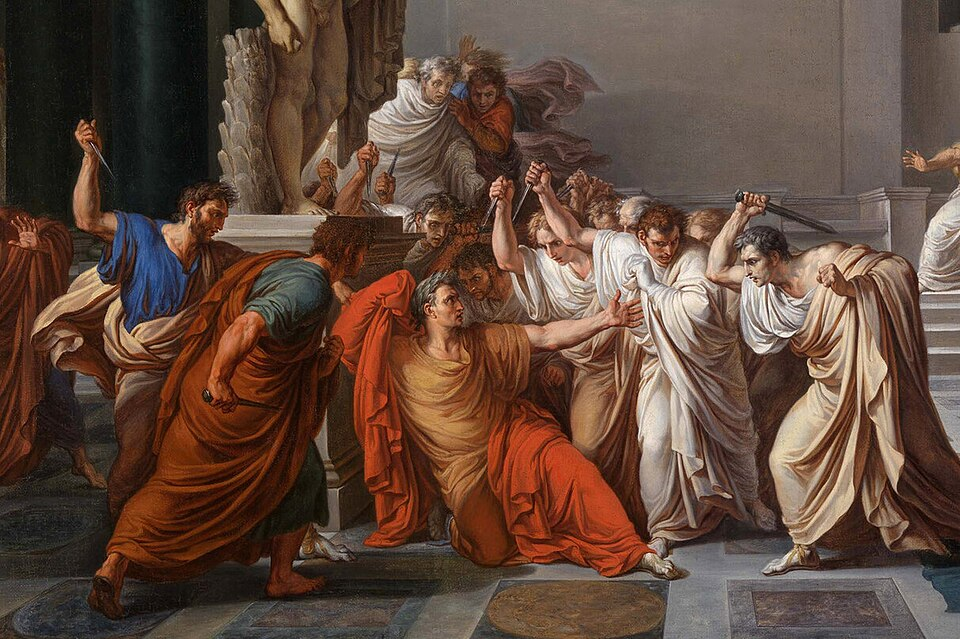

El dictador César, muerto a puñaladas en plena sesión del Senado
Un grupo de senadores encabezados por Bruto y Casio dio muerte esta mañana a Cayo Julio César en la curia de Pompeyo. El dictador perpetuo recibió unas veintitrés puñaladas y cayó al pie de la estatua de su antiguo rival. Los conjurados se proclaman libertadores de la República y la ciudad, presa del pánico, cierra sus puertas.

En los idus de este mes de marzo, en el consulado de Marco Antonio, la sangre del dictador Cayo Julio César ha corrido en la curia de Pompeyo. César había acudido a la sesión del Senado sin escolta armada, como acostumbraba, y apenas ocupó su asiento los conjurados lo rodearon con el pretexto de presentarle una súplica. Tilio Cimbro le tiró de la toga como señal convenida; Casca descargó la primera puñalada, y sobre el dictador cayeron entonces los puñales de todos. Los presentes cuentan que recibió unas veintitrés heridas y que fue a desplomarse, cubriéndose el rostro, al pie de la estatua del propio Pompeyo.
Los conjurados serían unos sesenta, senadores todos, encabezados por Marco Junio Bruto y Cayo Casio Longino, hombres a quienes César había perdonado y honrado después de la guerra civil. Refieren los presentes que el dictador intentó defenderse con el punzón de escribir hasta que vio a Bruto entre los atacantes; que entonces pronunció palabras de reproche que los testigos repiten de maneras distintas, sin que este diario pueda establecer una versión cierta, y que dejó de resistirse. Consumado el hecho, Bruto quiso arengar a los padres conscriptos, pero habló para bancas vacías: los senadores huían por las puertas alzándose las togas, y el terror ganó las calles.
Nadie ignora las causas que se murmuran desde hace meses en el foro. César, vencedor de todas las guerras, había sido nombrado dictador perpetuo, y los honores se acumulaban sobre él como sobre ningún romano: estatuas entre los reyes, un mes con su nombre, su rostro en la moneda. En las fiestas Lupercales, el cónsul Marco Antonio le ofreció una diadema real que César rechazó, aunque muchos vieron en la escena más ensayo que renuncia. Los conjurados sostienen que no había otro remedio: que mientras César viviera, la República era un nombre vano, y que los puñales han hecho hoy lo que las leyes ya no podían.
Los presagios alimentan todas las conversaciones. Cuentan que el adivino Espurina había advertido a César que se guardara de los idus de marzo, y que esta misma mañana, al cruzarse con él, el dictador le dijo sonriendo «Los idus ya llegaron», a lo que el arúspice respondió «Sí, pero no han pasado». Se dice también que su esposa Calpurnia, agitada por malos sueños, le rogó que no acudiera a la sesión. A esta hora, Roma es una ciudad cerrada: los vecinos atrancan sus puertas, los comercios bajan sus tablones, y el cónsul Marco Antonio, despojado de su toga, se ha escondido nadie sabe dónde.
Los conjurados han marchado al Capitolio con los puñales en alto, proclamándose libertadores de la República, y allí aguardan, protegidos por gladiadores, a que la ciudad los aclame o los condene. Este diario no se atreve a juzgar todavía si lo de hoy ha sido un tiranicidio o un crimen. Pero se pregunta, con el temblor de quien ha visto el cuerpo del amo del mundo tendido a los pies de una estatua, si la República que dicen haber salvado puede sostenerse sobre esta sangre. César ha muerto; queda por saber si con él muere también su fortuna, o si esa fortuna busca ya otras manos.